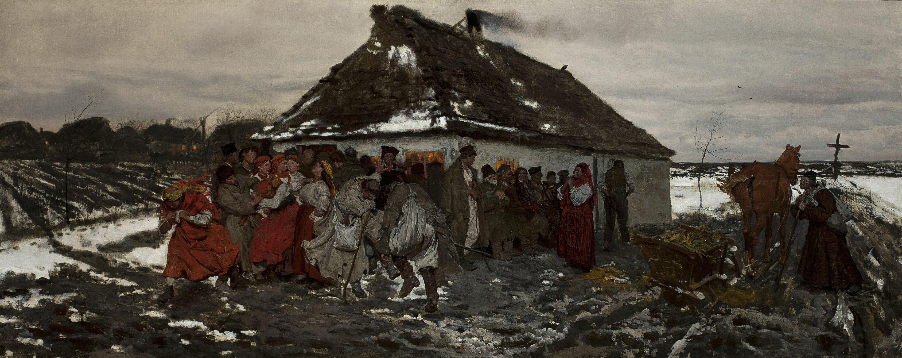

Cross in a blizzard, 1907, oil on canvas.
This piece—wow. This was the first one I saw and it's what set me down this rabbit-hole. I actually wanted want to rewrite the crucifixion scene to be more cold and lonely, but I'm glad I didn't. I don't think this painting is about Christ, when I see this I think of the simple rural faith in Eastern Europe. This is about the people.
Chełmoński's Wikipedia calls him a "realist" painter; yeah that's what stands out to me. This painting is so real.

Return from a ball (Sleigh ride). 1879. oil on canvas. 80 × 160 cm (31.4 × 62.9 in). Katowice, Silesian Museum
Most of Chełmoński's work is people riding horses. I wonder if the reason he painted so many is because they were easy to sell; I imagine rich people like frothing horses and hunting dogs.
There are a few of these that stood out to me though. I love the soft face of the daughter in the back of the sleigh. This is such a "Christmas" image to me.
(Click on the image to make it bigger)

At the Market, 1883, oil on canvas 57 × 92.5 cm, National Museum in Warsaw (MNW)
My friend tells me these are probably merchants relaxing and drinking tea. I love little details like the boy's red tunic and how the man is so hunched over driving the horses.

Indian summer. 1875. oil on canvas. 119.7 × 156.5 cm (47.1 × 61.6 in). Warsaw, National Museum in Warsaw (MNW).
What do you think she is thinking?

Cossacks in march. 1881. oil on canvas. 70 × 175 cm (27.5 × 68.8 in). Warsaw, National Museum in Warsaw (MNW).
Eastern Europe loves the Cossacks. Historically they were a civilian militia; defending the people when their government didn't. Today they are beloved both because they were extremely successfull (the Turks were so scared of them), and they've since become a symbol of freedom.

Before the inn. 1877. oil on canvas. 71 × 174.5 cm (27.9 × 68.7 in). Warsaw, National Museum in Warsaw (MNW).

Moonlit night. 1877. oil on canvas. 76.5 × 145 cm (30.1 × 57 in). Private collection.
According to wikipedia, toward the end of his life Chełmoński painted people less and less, and nature more and more.
The lighting on this one is just beautiful, that moonlight is just the perfect shade.
This makes me fantasize about being a hunter with his dogs on the snow These pieces remind me that this was how these people lived. The sleighs riding into untouched snow evoke not forntiersman per say, but certainly people who lived on the edge of a harsh wilderness.

Night in the Ukraine. 1877. oil on canvas. 69 × 129 cm (27.1 × 50.7 in). Warsaw, National Museum in Warsaw (MNW).

Path Through a Field. 1889. oil on canvas. 55 x 45.5 cm. National Museum in Warsaw (MNW)
Now we are getting to the truly great stuff. As Jozef got older this is more and more what he chose to make; simple nature with no exciting horses or people in sight; just wild flowers and grass. As he got older he could've done whatever he wanted, but this is what captivated him. He seems to love the nature he saw daily.
The distant trees actually remind me of grain silos and barns from my hometown.

Cranes, 1870, oil on canvas, National Museum in Kraków.
This is my absolute favorite. The fog in the morning, the silhouetted cranes, the dots of red flowers; it moves something in me. This reminds me of waking up early at a quiet lakefront cottage and sitting on the porch drinking coffee with no one else around.

Partridges in the snow, 1891, oil on canvas, National Museum in Warsaw (MNW).

Taking-off Cranes, 1871, oil on canvas, Private collection.

Hanging Ducks, 1879, oil on canvas, 49.5 cm x 39.5 cm, National Museum in Krakow (NMK)

Dawn. Kingdom of birds, 1906, Private collection.